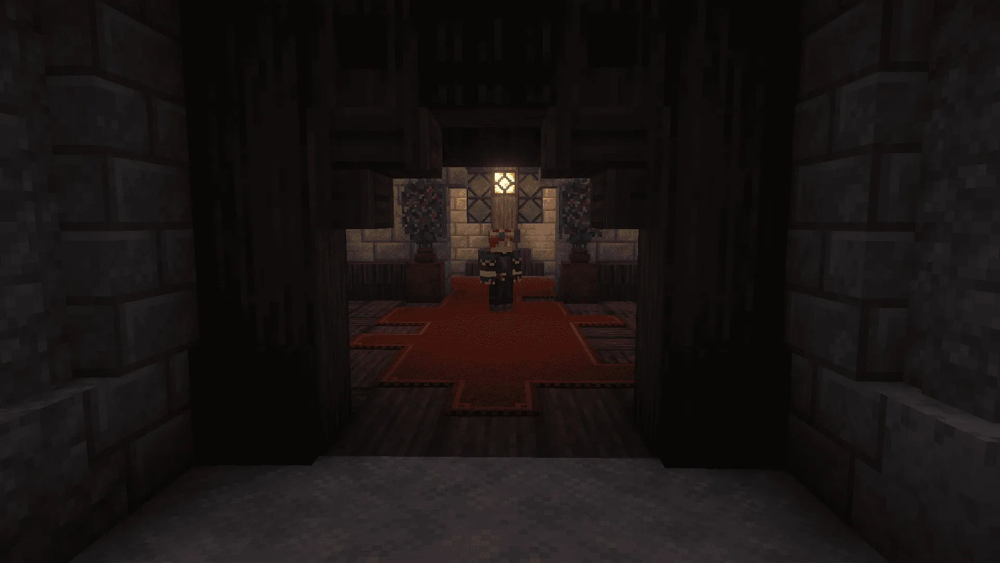
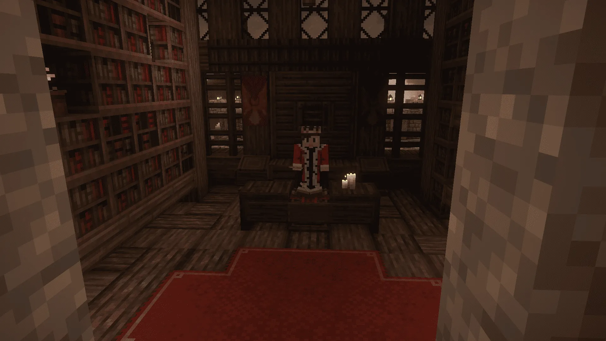
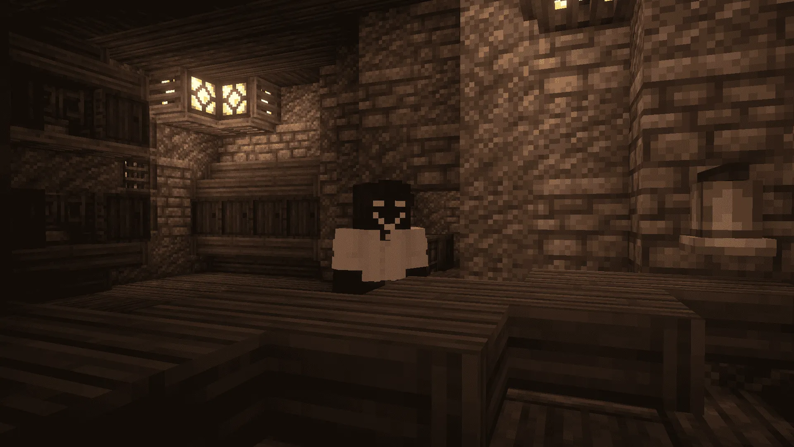
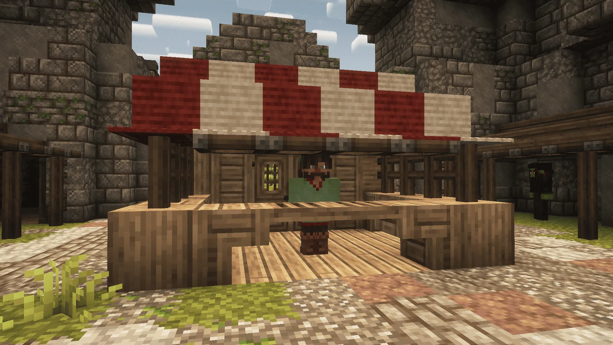
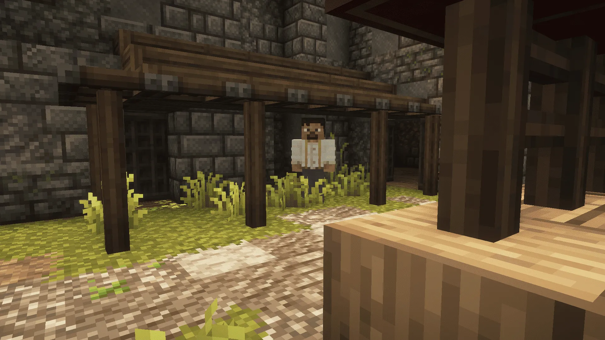

Как начать играть
- Зайди в Discord
- Отправь боту код с сервера
- Пройди интро и выбери имя

Осколки, фрагменты и великие души используются для торговли и покупок у NPC.

Монеты можно менять у разменщика. Крупные души можно отдать хранителю.

Приват работает через самописную систему тотемов и ключей. Подробный рецепт и управление будут в отдельном гайде.

/me описывает действие, /do - состояние вокруг, /try - спорную попытку.

/ooc нужен только для коротких сообщений вне роли. Имя меняется через администрацию.

Говори рядом с игроками, чтобы поддерживать живой RP.

Жесты помогают показывать настроение и действия персонажа.